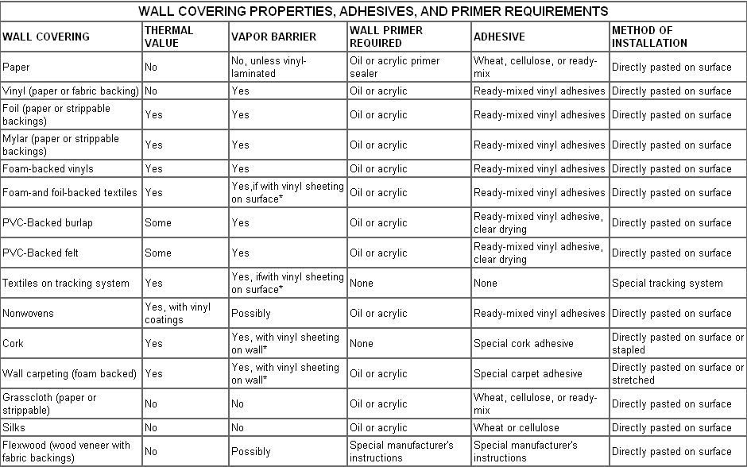

Here are some beautiful ways to achieve energy savings in your home.
I'm sure you've heard the expression "It's not the heat, it's the humidity" used in reference to someone's state of summertime misery. Well, there's often a lot of truth to that statement. Discomfort in warm weather is usually influenced by the amount of moisture in the air. Hence, many folks firmly believe that drier air is cooler air.
It stands to reason, then, that this same philosophy of comfort can be turned around and used to encourage the feeling of warmth within the interior of your home during the coming cold months. In fact, a relative wintertime indoor humidity of between 40% and 50% is desirable. Unfortunately, most artificial heating systems zap the natural moisture from your indoor environment. One possible way to counteract the escalating cost of home heating is to deliberately increase the relative humidity in your house ... a practice that will make you feel more comfortable at a lower thermostat setting.
There are, of course, several ways of doing this. One popular method is to simply place pans of water on radiators, on woodstoves, or near fireplaces ... so the liquid evaporates and thus adds moisture to the air. However, the plain truth is that many contemporary homes-although fully insulated-simply aren't equipped to hold in humidity. Any method used to increase a dwelling's interior "wetness" will usually be less than fully successful unless some form of vapor barrier is used to keep the moistened air from escaping through the walls to the colder, drier outside environment. There are many such barriers on the insulation market that are placed between the interior and exterior walls ... and even paint is available (such as Insul-Aid, which is manufactured by Glidden) that'll protect your walls against moisture loss.
Perhaps best of all, for those who want to combine function with beauty and versatility, there's a large selection of wall coverings on the market today that can be very effective against the loss of interior humidity ... and some of these combine vapor barriers with either heat-reflective materials or thermal insulation. The accompanying chart describes some of the many choices available, and provides information on thermal value, vapor barrier qualities, primer requirements, adhesives, and installation methods.
One of these coverings could be just the thing to help you have your heat ... and humidity too!
|
 |
|
|